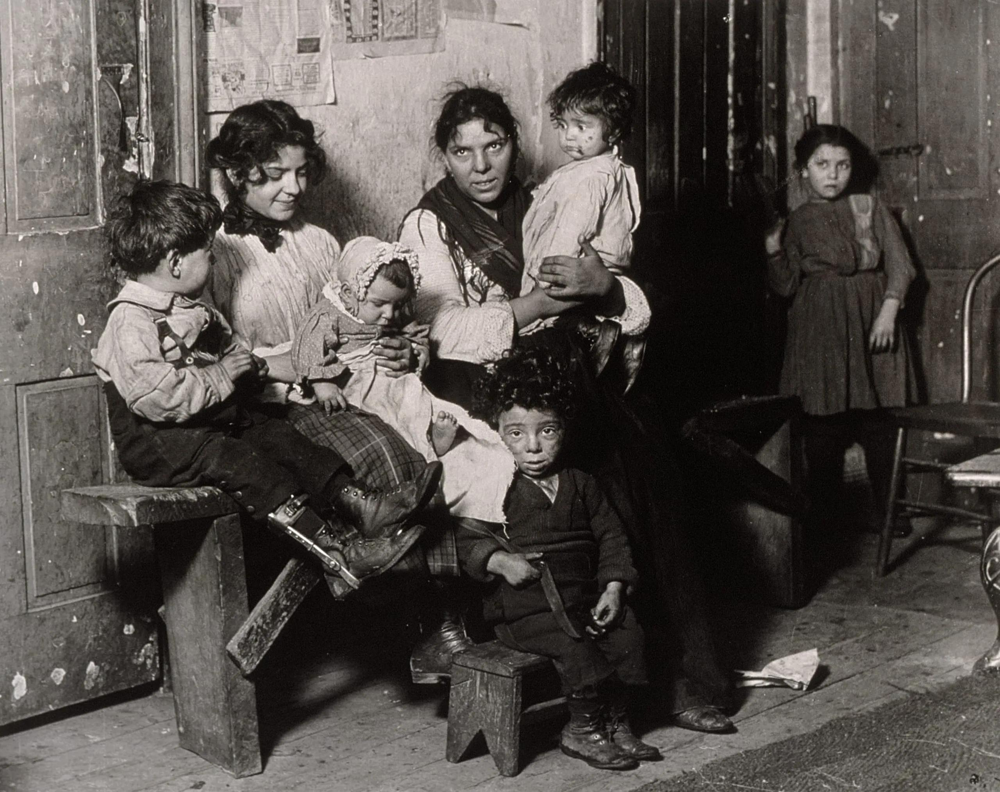

Late 1800s–early 1900s
Bringing Traditions to Chicago
Italian immigrants built communities in Chicago while adapting to life in a new city.
Food · Migration · Community
Explore how Italian immigrants and their descendants helped shape Chicago’s food culture. Move through the timeline to discover the people, neighborhood businesses, and traditions connected to this evolving story.

Loading image caption…
Late 1800s–early 1900s
Italian immigrants built communities in Chicago while adapting to life in a new city.
Era 1 of 5
Food history is also the history of migration, family, work, and neighborhood life. Chicago’s Italian-American food culture continues to change while carrying traces of the communities that helped shape it.